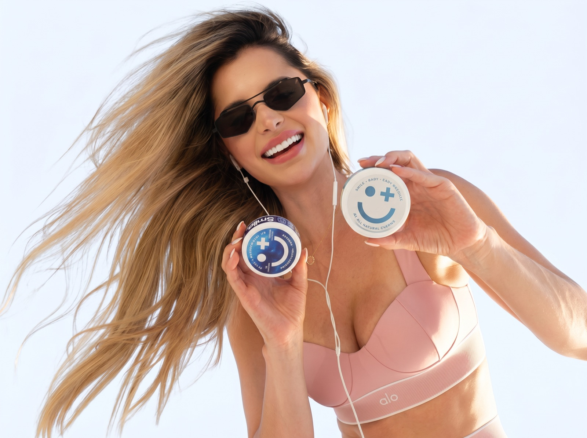
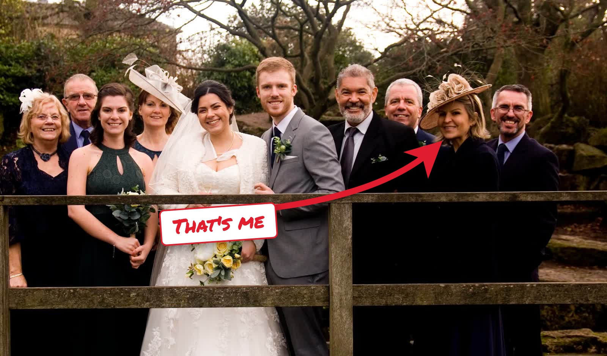
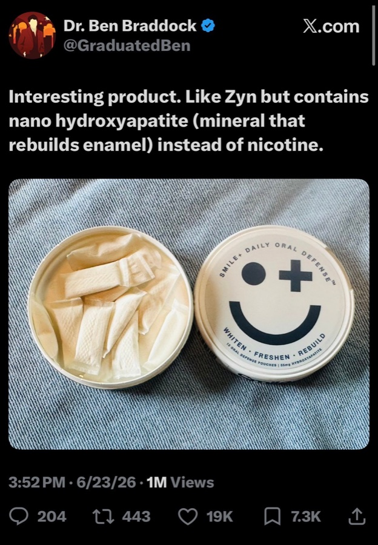
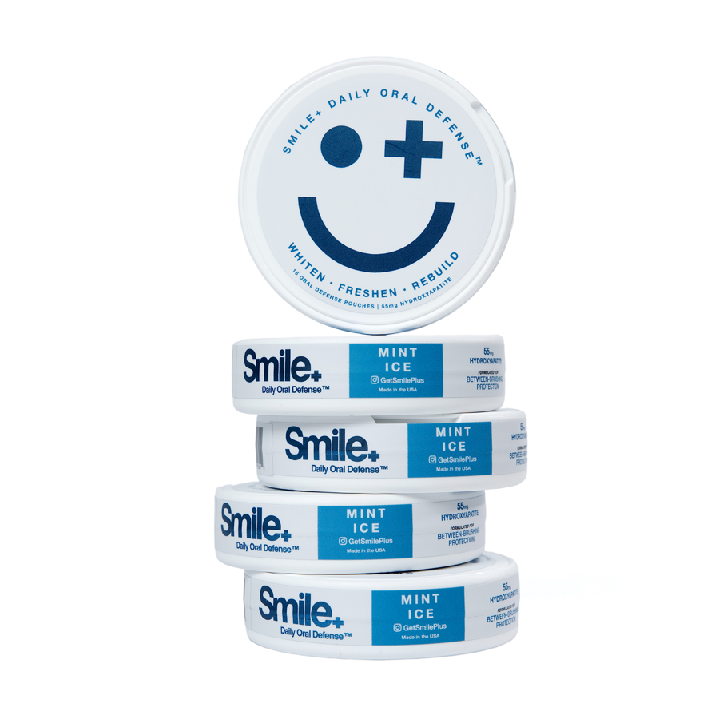
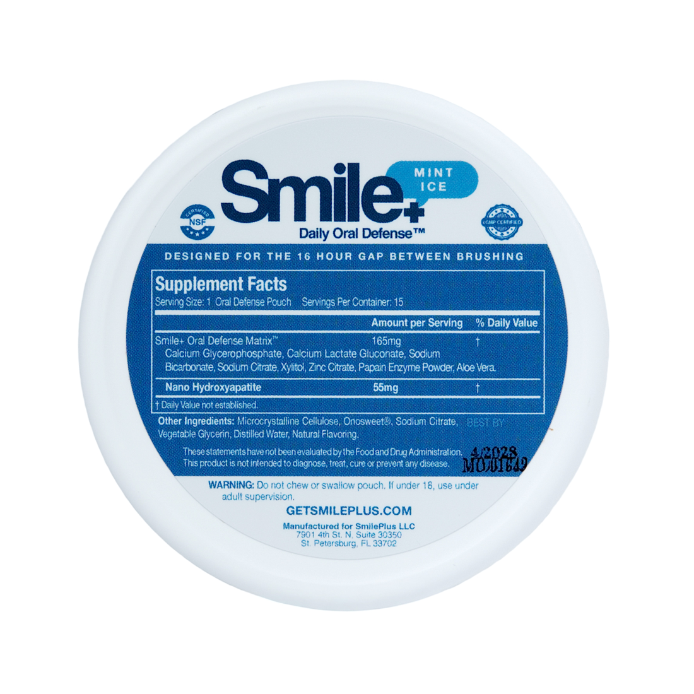
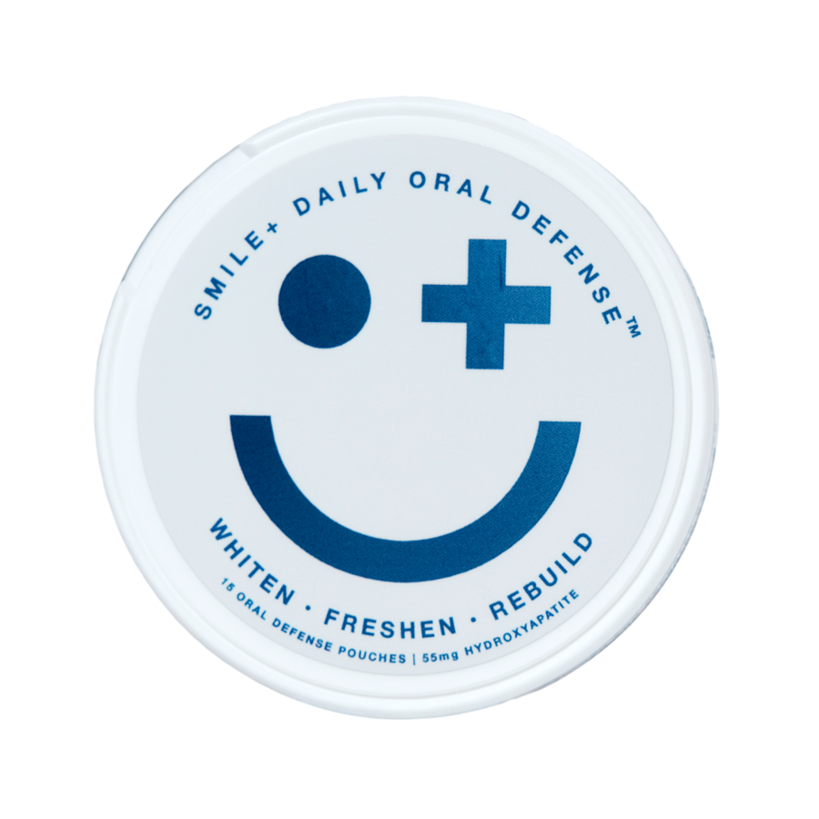

Goodbye coffee-stained teeth? Try this "20-minute pouch ritual" that helps lift surface stains and skip the $650 whitening appointment

If a whitening product has ever left your gums stinging and your teeth zinging at cold water, what it was really telling you is: "This works by stripping, and you're going to pay for it."
If you've stood at a bathroom mirror at 11 p.m. peeling a strip off, checking whether anything changed, and quietly deciding you'd finish the box "next month"...
Then what I'm about to explain will show you why the strips were never going to hold, and what is actually going on with your teeth.
I'm Megan Carlisle. I write about health and consumer products, and I've been a two-cups-before-9-a.m. person since college.
I thought I understood whitening. I'd tried most of it. And I still got blindsided.
Because after 40, my teeth started looking dull no matter what I did. The strips stopped working the way they used to. A dentist quoted me $650 for an in-office session, plus touch-up trays, plus a new box of sensitive toothpaste. For a mouth I'd brushed twice a day my whole life.
I wasn't angry at my dentist. I was frustrated at a whitening industry that sells you a burn and calls it a result, and never explains why the color keeps coming back.
So if you're anything like I was... if your coffee habit shows up in your smile... if strips make your teeth ache... if you've stopped smiling with your teeth in photos... or if you've ever been quoted hundreds of dollars for whitening you'd have to repeat next year...
Then you're in the right place. And you're not the one who failed here.
Please read the next 6 minutes carefully.
Because what finally changed my smile has nothing to do with stronger peroxide, longer strips, blue lights, charcoal, or any of the things you've already tried.
It has everything to do with one thing I completely overlooked: what my teeth were doing during the 16 hours a day I wasn't brushing them.
The Photo That Finally Got Me

It was my sister's wedding. I was in every photo, and in every photo I was the one with the closed-mouth smile.
My teeth weren't bad. They just looked tired next to everyone else's. A flat, yellowish cast that made me look older than the people standing next to me.
I did what I'd always done. I bought a 14-day box of strips.
Day one, fine. Day three, my gums stung where the gel touched them. Day five, cold water made my front teeth flinch. Day six, I stopped. I have stopped at day six of fourteen more times than I want to admit.
At my next cleaning I asked the hygienist why strips never seemed to stick. She said something I'd never heard from anyone in a dental office:
I didn't have an answer. Nobody had ever asked me to think about it.
The REAL Reason Your Teeth Look More Yellow After 40
What if I told you the dullness and the sensitivity aren't two separate problems?
They come from the same place. And it isn't your brushing.
Enamel isn't white. It's translucent, and it thins.
The white you see in a young smile is mostly light bouncing off thick, smooth enamel. Underneath sits dentin, which is naturally yellow. Every year of chewing, acid, and brushing wears enamel a little thinner, so more of that yellow shows through. No strip on earth bleaches dentin from the outside.
Stains don't sit on top. They soak in.
Enamel isn't glass. Under magnification it's full of microscopic pits and hairline scratches. Coffee, tea, and red wine carry pigments called chromogens that settle into those gaps and cling to the sticky protein film that coats your teeth all day. Think of a sealed countertop versus bare wood. Spill coffee on the sealed one and you wipe it up. Spill it on bare wood and it soaks in.
Peroxide works by stripping, and the surface it leaves behind stains faster.
Whitening strips push peroxide into the enamel to break pigments apart. It does lighten teeth. But it also dehydrates the surface and irritates the nerve underneath, which is the sting and the zing you feel. And the roughened, dried-out surface it leaves behind? It grabs the next cup of coffee even faster. That's why the color creeps back, and why the industry sells whitening as something you repeat forever.
What changes after 40
Saliva is your body's own repair system. It carries calcium and phosphate back to the enamel and washes acid away. It's the reason your teeth made it through your twenties on coffee and late nights.
You make less of it as you age. A lot less once you start the medications many of us pick up in our forties and fifties. Blood pressure. Antihistamines. Antidepressants. Dry mouth is on hundreds of labels.
So the pigments have more places to lodge, and there's less saliva rinsing them away and replacing the mineral that acid keeps pulling out.
Most people blame themselves. Not brushing enough. Too much coffee. But you could brush perfectly and still lose this fight, because the fight happens during the hours your toothbrush isn't there.
Why nothing you've tried has worked
That's why strips, whitening toothpaste, and LED trays never held for me.
Strips bleach and burn, then hand your teeth back rougher than before. Whitening toothpaste gets two minutes of contact, then goes down the drain. LED kits are strips with a light show.
None of them put anything back into the surface. And none of them are there at 10 a.m. when the second coffee lands.
What Researchers Figured Out About the Mineral Your Teeth Are Made Of
Here's the piece the whitening aisle leaves out.
Your enamel is about 96% mineral, and that mineral has a name: hydroxyapatite. In the 1970s and 80s, researchers in Japan started working with a nano-sized form of it and noticed two things. Put it in direct contact with enamel and it deposits into the microscopic gaps acid leaves behind. And a surface with those gaps filled is smoother, so it reflects light more evenly and looks brighter.
That second effect is the part that matters for coffee drinkers. Nano-hydroxyapatite doesn't bleach. It fills and smooths the surface where stains were lodging, and it supports remineralization while it does it. No peroxide. No sting.
It became a standard ingredient in Japanese toothpaste decades ago. In the U.S. it's only recently shown up, mostly in premium toothpastes.
Here's why toothpaste falls short:
You brush for two minutes, twice a day. That's four minutes of contact out of twenty-four hours. Then you spit, and whatever was working goes down the drain.
The rest of the day, your enamel is on its own.
But when nano-hydroxyapatite sits against your teeth and stays there:
- Minutes of contact, not seconds
- Mineral is there while the coffee is, not eight hours later
- Nothing spit out, nothing rinsed away
- Works between brushings, when nothing else is
It's the difference between rinsing a cut and putting a bandage on it.
The question was how to keep it on my teeth for more than two minutes without walking around with toothpaste in my mouth.
The Post That Sent Me Looking

A friend sent me a screenshot. A science-leaning account on X, Dr. Ben Braddock, had posted about a small tin of pouches: "Like Zyn but contains nano hydroxyapatite (mineral that rebuilds enamel) instead of nicotine."
Over a million views. Nineteen thousand likes. And a comment section full of people asking the question I was already typing: where do I get one?
A pouch. Of course. The one format that is designed to sit against your teeth for twenty minutes at a time while you go about your day.
Introducing Smile+ Daily Whitening

Smile+ Daily Whitening is an oral-care pouch built for the hours between brushings. It sits between your cheek and gum for 20 to 40 minutes, and each pouch carries 55 mg of nano-hydroxyapatite, the mineral your enamel is made of.
It is not a bleach and it is not a numbing agent. It is the actual mineral, in a form small enough to settle into the pits and scratches where coffee pigments were living, held against your teeth for as long as you'd hold a mint.
Think of a road full of potholes. You don't paint over them. You fill them back in with the material the road was built from.
Because it's a pouch, it works where a toothbrush can't stay. Toothpaste gets two minutes and goes down the drain. A pouch after your morning coffee, after lunch, or on the drive home means mineral is going back onto the surface at exactly the moments stains are trying to set.
The rest of the formula handles the in-between. Papain, a plant enzyme, gently loosens the protein film stains anchor to. Sodium bicarbonate and sodium citrate nudge your mouth back toward a neutral pH after coffee. Xylitol starves the bacteria that make acid. Zinc citrate works on breath at the source instead of masking it. Aloe vera keeps it gentle on your gums.
And what's not in it is the point: no peroxide, no caffeine, no nicotine, no sugar. Made in the USA in a cGMP facility, NSF certified, in a clean Mint Ice flavor.
This is proactive whitening. It helps put back what coffee and acid take out of the surface every day, before it turns into a $650 quote.
That just-left-the-dentist feeling at 3 p.m., without the appointment.
Save up to 67% off

Surface Stains
Enamel
Breath
- 55 mg nano-hydroxyapatite in every pouch
- Helps lift surface stains without peroxide burn
- Whitens and freshens between brushings
- Zero caffeine, zero nicotine, zero sugar
Try it risk-free for 30 days. Money-back guarantee on every order.
How Does It Work?
Every ingredient in a Smile+ pouch has a job. Here's the full list, and what each one is doing while the pouch sits there.
Nano-Hydroxyapatite · 55 mg per pouch
The star. The same mineral your enamel is made of, in a particle size that settles into surface micro-defects. Helps reduce the look of surface stains and supports remineralization. The active used by premium whitening toothpastes, delivered at roughly twice the dose with many times the contact time.
Papain Enzyme
A plant enzyme from papaya that gently breaks down the protein film surface stains cling to.
Sodium Bicarbonate
Neutralizes the acids coffee and food leave behind, with gentle stain lifting.
Sodium Citrate
Supports pH balance and healthy salivary flow, your mouth's own defense.
Calcium Glycerophosphate
Buffers acid and supplies calcium and phosphate to support enamel mineralization.
Calcium Lactate Gluconate
A highly soluble calcium source that keeps mineral available while the pouch is in.
Xylitol
A natural sweetener stain-causing bacteria can't digest, so they produce less acid. Sweet without sugar.
Zinc Citrate
Works on breath at the source by neutralizing the sulfur compounds that cause it.
Aloe Vera
Soothes gum tissue and keeps the pouch gentle enough for daily use.

"A thoughtful, modern formulation. It's the kind of product I'm comfortable keeping in my office for patients looking for a clean, gentle daily whitening option."
Join 2,000+ Who Trust Smile+
Switched from harsh strips
"Used whitening strips for years and dealt with the sensitivity every time. Switched to Smile+ a month ago and my teeth feel cleaner without the burn."
Fresh breath at work
"Pop one in during my commute and I've got whiter teeth and fresh breath by the time I'm at the office. The mint flavor is great too."
Finally something that works
"The toothpastes with nano-HA don't stay on my teeth long enough to do anything. Smile+ changed the game with this whitening pouch!"
What You May Notice Over Your First Two Months
Fresher breath, cleaner-feeling teeth
The first thing most people notice is the feel. A pouch after coffee leaves your mouth feeling rinsed and cool instead of coated. The ritual settles in fast: coffee, pouch, get on with the morning.
Surface stains start to look lighter
This is the window where most people begin to see a difference in the mirror, especially along the edges of the front teeth where coffee shows first. Gradual, not blinding. The kind of change you notice before anyone else does.
Teeth feel smoother to the tongue
As mineral keeps depositing into the surface, many people describe their teeth feeling glassier and the just-brushed feeling lasting through the afternoon.
A smile you stop thinking about
With daily use, the goal isn't a Hollywood glow. It's a smile that looks clean in photos and a routine that costs you 20 minutes you were spending anyway.
Individual results may vary. Smile+ is not a bleach and does not change the natural color of dentin.
What Whitening Actually Costs in America
Here's the math behind the common routes. These are broad U.S. estimates, and actual costs vary by brand, provider, location, and how often you repeat.
The Strip Route
- A 14-day box of name-brand strips: about $45 to $60
- Most people repeat 2 to 4 times a year as color returns
- Sensitivity toothpaste to cope with the sting: $8 to $12 a tube
The Dentist Route
- In-office whitening session: about $500 to $1,000
- Custom take-home trays and gel: $300 to $600
- Touch-ups typically needed every 6 to 12 months
The Pouch Route
- Smile+ 5-tin bundle: $59.95 at current pricing (regular $149.95)
- 75 pouches, so about $0.80 per 20-minute session
- Free shipping on orders $20+, 30-day money-back guarantee
To Be Clear About What This Is
Smile+ Daily Whitening does not bleach teeth, replace brushing and flossing, or give you a reason to skip the dentist. It is not intended to diagnose, treat, cure, or prevent any disease.
It gives your teeth mineral contact and gentle stain support during the hours nothing else is there.
Not a treatment. A daily habit that helps take care of the surface before the color becomes a bigger conversation.
Final Verdict: Is It Worth It?
I'd spent fifteen years and probably $2,000 on whitening, and I was still closing my mouth in photos. Not because nothing worked, but because nothing held, and everything that worked hurt.
I tried the strips, the trays, the blue light, the charcoal, the whitening toothpaste that tasted like chalk. None of it gave the surface of my teeth anything back. None of it was there when the coffee was.
Then I started using Smile+ Daily Whitening after my morning coffee, after lunch, and on the drive home. The part I didn't expect was how much I stopped thinking about my teeth at all.
Right now, there are two paths.
Keep the same routine. Buy another box of strips when the wedding invitation arrives, stop at day six, and let the 16 hours between brushings take care of themselves.
Give your teeth mineral support when your toothbrush isn't around. One pouch after coffee, one after lunch, and let the surface do its work while you get on with your day.
I know which path I'd pick. I did.
If coffee shows in your smile, if strips make you wince, or if you've been quoted hundreds for whitening you'd have to repeat next year, Smile+ Daily Whitening may be worth trying. It comes with a 30-day money-back guarantee, so the risk is the twenty minutes.
UPDATE: Bundle pricing is live
Since this article was published, readers have asked where to get it. Smile+ currently has bundle pricing at up to 67% off, with free shipping on orders over $20 and a 30-day money-back guarantee on every order. The 5-tin bundle is the most popular pick. Link below.
Up to 67% off for a limited time
Smile+ Daily Whitening · 15 pouches per tin · Mint Ice

Get up to 67% off